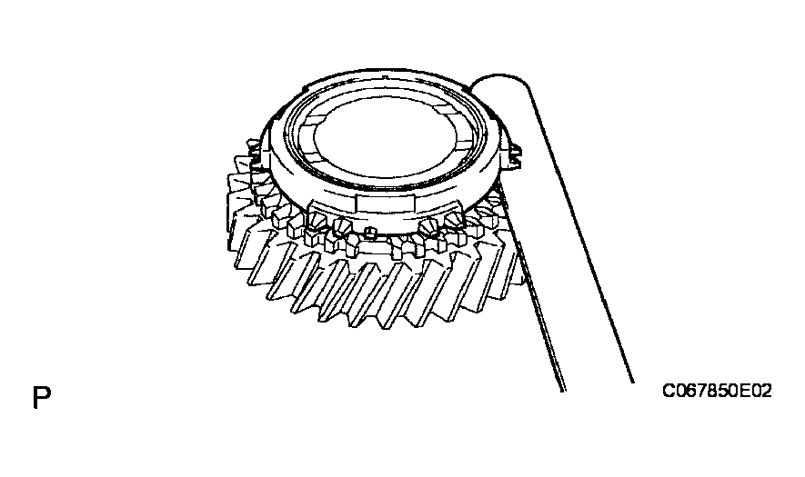
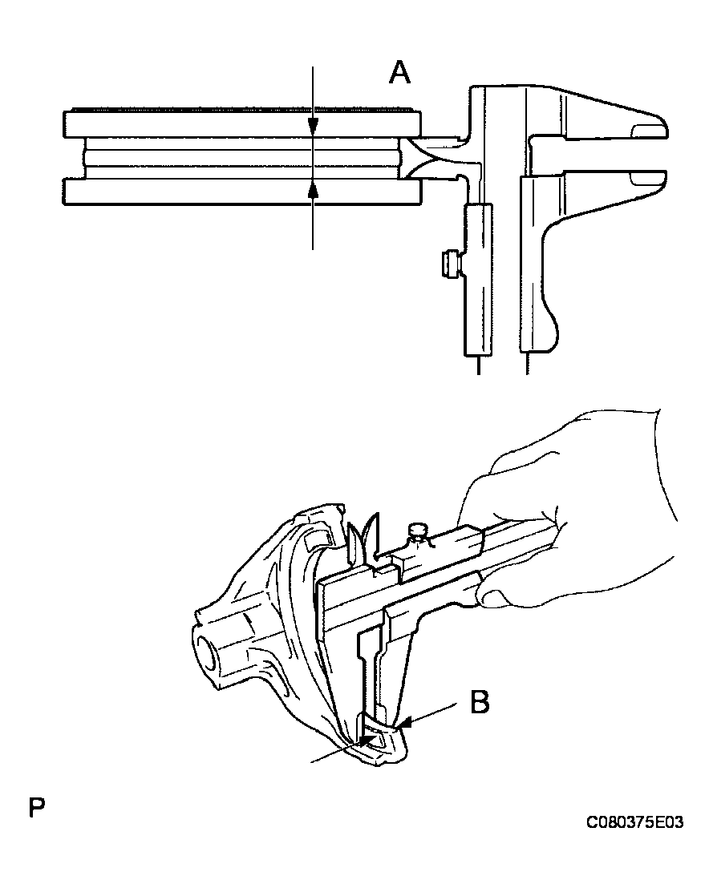
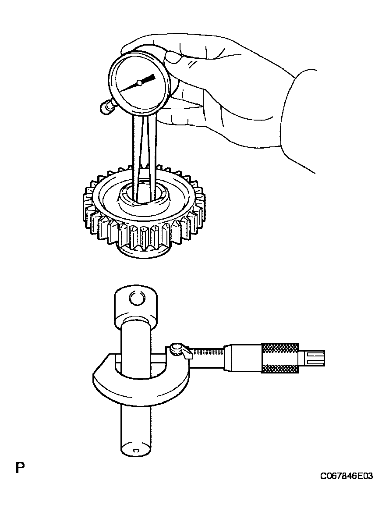

Manual Transaxle Unit: Inspection
- INSPECT NO. 3 SYNCHRONIZER RING
- Check for wear or damage.
- Coat the 5th gear cone with gear oil. Turn the synchronizer ring in one direction while pushing it against the 5th gear cone. Check that the ring locks.
If the synchronizer ring does not lock, replace the ring or 5th gear.
- Using a feeler gauge, measure the clearance between the synchronizer ring back and gear spline end.

Courtesy of © TOYOTA, LICENSE AGREEMENT TMS1002Minimum clearance: 0.75 mm (0.0295 in.)
If the clearance is less than the minimum, replace the synchronizer ring and gear.
NOTE: Ensure the fine lapping compound is completely washed off after rubbing.
- INSPECT NO. 3 TRANSMISSION HUB SLEEVE
- Check the sliding condition between the No. 3 transmission hub sleeve and No. 3 transmission clutch hub.
- Check that the spline gear edges of the No. 3 transmission hub sleeve are not worn down.
- Using a vernier caliper, measure the width of the No. 3 transmission hub sleeve groove (A) and the thickness of the claw part on the No. 3 gear shift fork (B), and calculate the clearance.

Courtesy of © TOYOTA, LICENSE AGREEMENT TMS1002Standard clearance: A - B = 0.3 to 0.5 mm (0.012 to 0.020 in.)
If the clearance exceeds the standard clearance, replace the No. 3 transmission hub sleeve and No. 3 gear shift fork.
- INSPECT 5TH GEAR
- Using a caliper gauge, inspect the inside diameter of the 5th gear.
Standard inside diameter: 29.915 to 29.931 mm (1.1778 to 1.1783 in.)
Maximum inside diameter: 29.931 mm (1.1783 in.)
If the inside diameter is greater than the maximum, replace the 5th gear.
- Using a caliper gauge, inspect the inside diameter of the 5th gear.
- INSPECT REVERSE IDLER GEAR SUB-ASSEMBLY
- Using a caliper gauge, measure the inside diameter of the reverse idler gear.

Courtesy of © TOYOTA, LICENSE AGREEMENT TMS1002Standard inside diameter: 18.040 to 18.058 mm (0.7102 to 0.7109 in.)
Maximum inside diameter: 18.058 mm (0.7109 in.)
If the inside diameter is greater than the maximum, replace the reverse idler gear sub-assembly.
- Using a micrometer, measure the diameter of the reverse idler gear shaft.
Standard diameter:
17.966 to 17.984 mm (0.7073 to 0.7080 in.)
Minimum diameter:
17.966 mm (0.7073 in.)
If the diameter is less than the minimum, replace the reverse idler gear shaft sub-assembly.
- Using a caliper gauge, measure the inside diameter of the reverse idler gear.